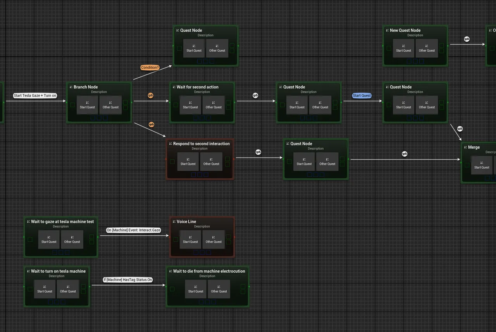
Plugin · Unreal plugin · work in progress
Narrative System
A quest and narrative tool for Unreal Engine that we built as a team of two. Quests are laid out as a graph of nodes, and each node is its own data asset that holds what it does on entry, the conditions to move on, and the side quests it starts. We started from the open-source Generic Graph plugin and reworked it into a narrative graph editor, with a runtime subsystem that follows each active quest through the graph.
- Type
- Unreal Engine 5.4 plugin
- Starting point
- The Generic Graph plugin
- Status
- Work in progress, 2024
- Team
- Two of us, with Sebastian Tengdahl
What we built
- A narrative graph editor, using the open-source Generic Graph plugin as a starting point
- Each graph node creates its own data asset, which is renamed and deleted along with the node
- Linking nodes writes the progress options into the asset, and unlinking removes them
- Progress conditions per link, such as a gameplay tag query on an actor or a delay (with no condition, it moves on straight away)
- Actions on entering and leaving a node, such as setting gameplay tags on an actor
- Nodes that start side quests, picked straight from the graph
- Custom Slate nodes and a details customisation, so a node can be edited without leaving the graph
- Labels on links for notes, Auto Arrange, and Validate Graph to refresh names and links
The plan
Before any code, we sketched how a quest flows: quest starts, branches that split the story, merges that bring it back together, and a map from each node to its data asset.

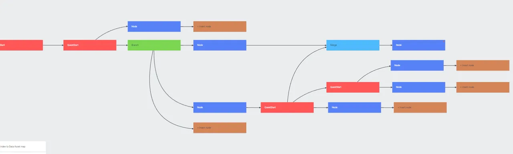
Early development
We used the open-source Generic Graph plugin as our starting point, then renamed and reworked it into a narrative graph, one node type at a time.

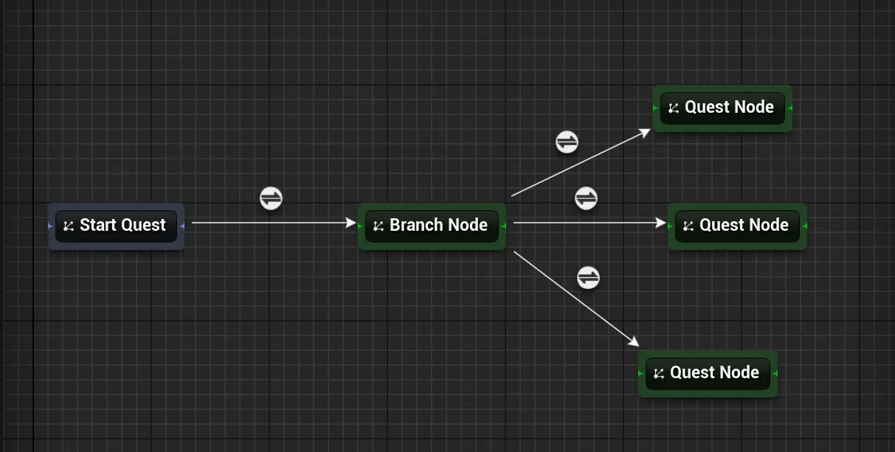

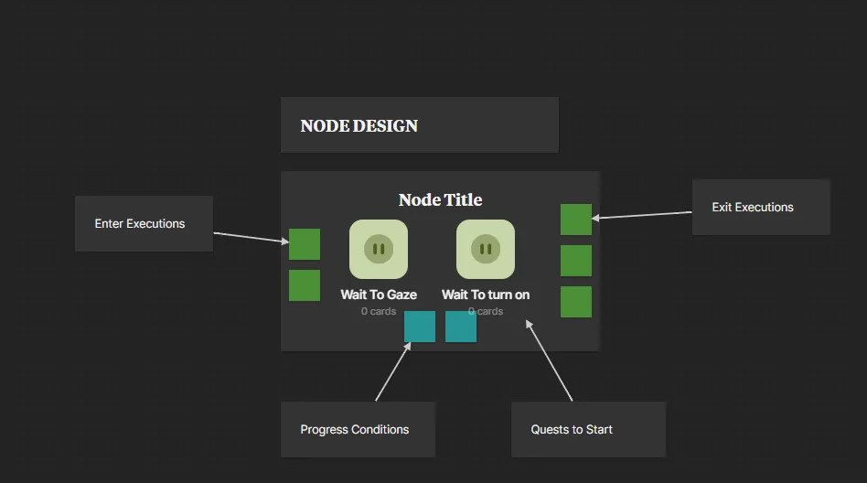

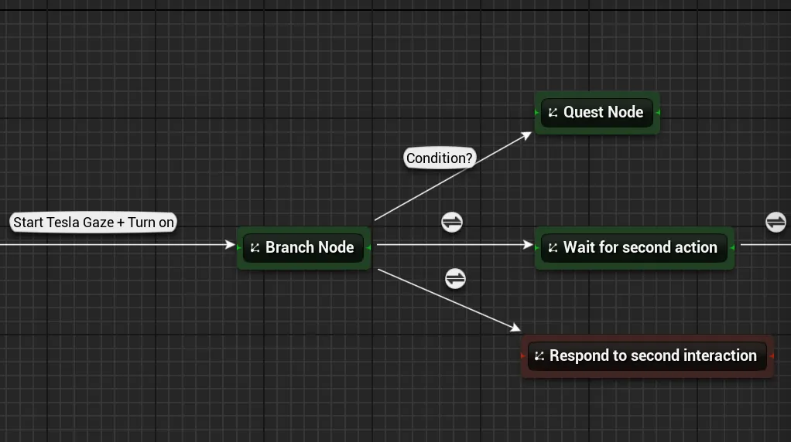

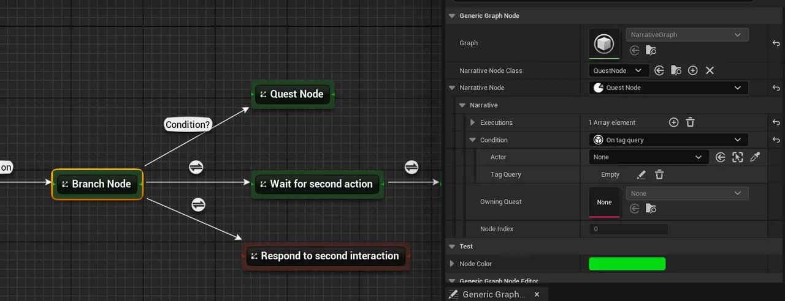
Coming together
Each node on the graph is a view of its own data asset. Linking two nodes writes the link into the asset, so the asset is always what the game runs.


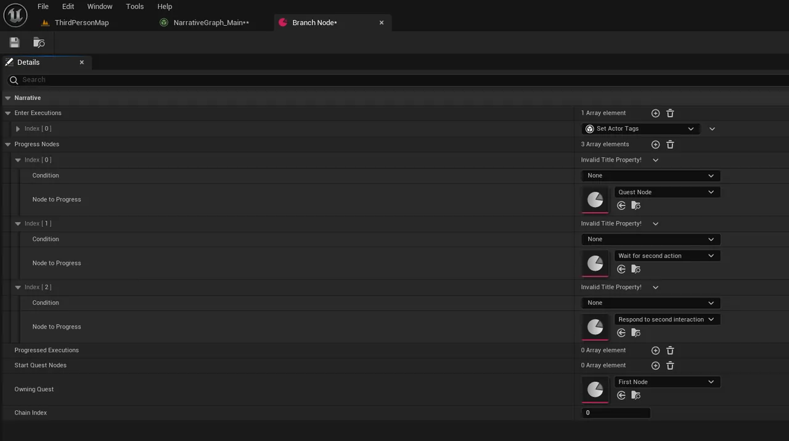
Working in the graph
Validate Graph walks the graph from each quest, refreshes node names and links, and rebuilds it. A chain with no parent is its own quest, ready to be started as a side quest.

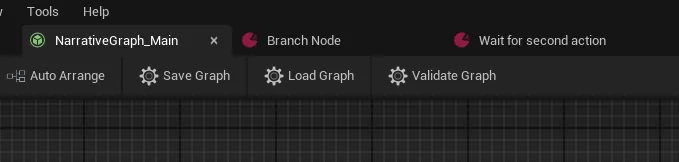

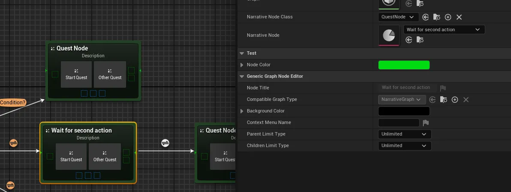

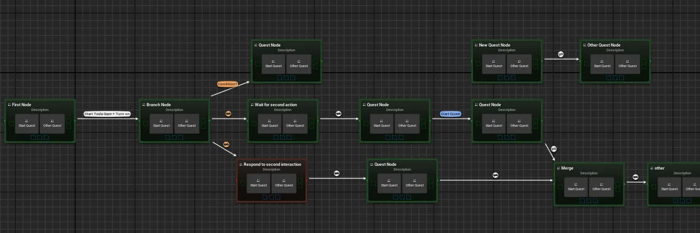

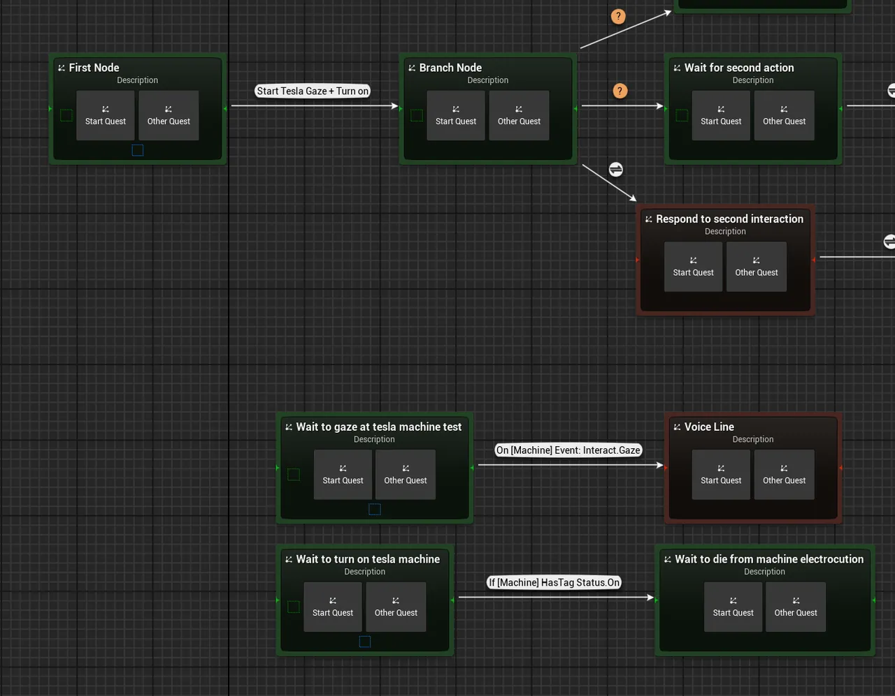
Tracking progress
To answer "has the story passed this point?", each node needs to know where it sits in its quest, even after branches and merges.

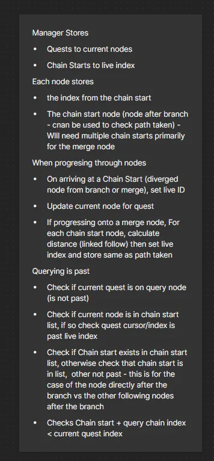

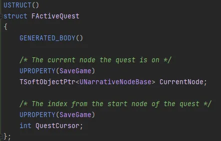

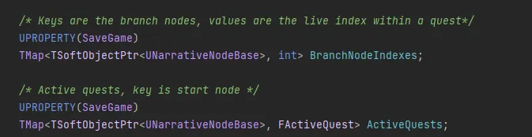
- The plan
- A cursor for each active quest, counted from its start node, plus a live index for each branch.
- The code now
- Simpler: the subsystem maps each quest to its current node, keeps a list of completed quests, and keeps a live index for each branch node. The cursor struct is commented out.
- Each node stores
- Its owning quest, its index in the quest, and the branch nodes before it. That is a list, so a merge can follow more than one branch. The early asset called the index a chain index.
- Still to write
- Updating the live indexes at branches and merges, and the query that checks whether a quest has passed a node.
Starting side quests
A node can start other quests when the story reaches it. Press + on the node, then pick the quest straight from the graph.

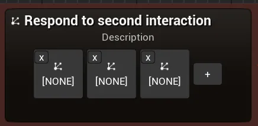

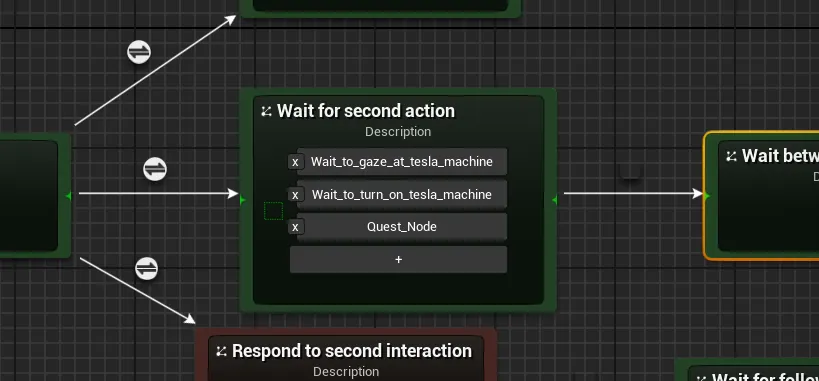

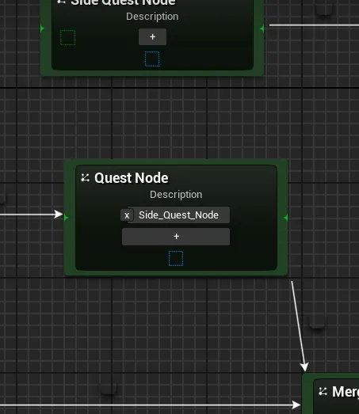
Progress nodes in the details panel
An early custom details panel. Each node the quest can move on to sits beside the condition that moves it there.

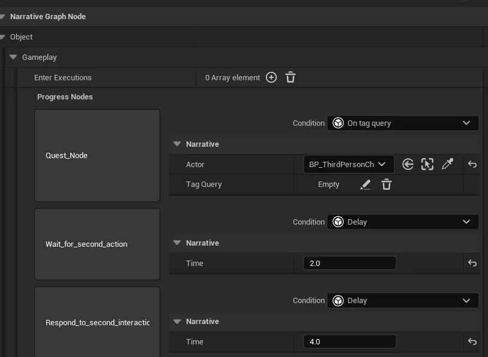
How it works
- Runtime subsystem
- A game instance subsystem starts quests, enters nodes and moves them on. It only moves a quest on from its current node, and logs each step to its own log category.
- Data asset nodes
- Quest nodes are primary data assets. The first node in a chain owns the quest, and every node after it is told which quest it belongs to.
- Conditions and executions
- Instanced, Blueprintable classes, so new ones can be added in Blueprints or C++. The tag query condition listens for tag changes on the actor's ability system component.
- Two modules
- A runtime module for the nodes and subsystem, and an editor module for the node factory and details customisation.
- Save and load
- Save Graph and Load Graph are a first test of writing the graph to binary.